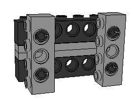
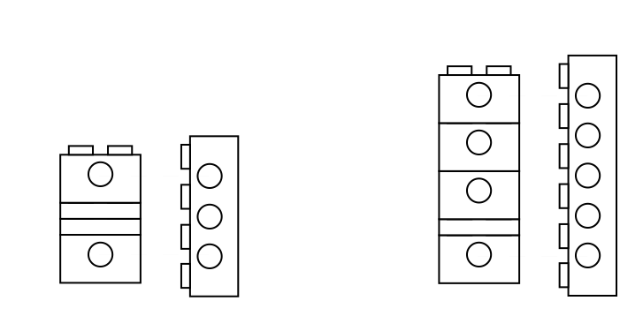

VerticalCrossBeams
page was renamed from Legopedia/VerticalCrossBeams
Suppose we want to reinforce two parallel LEGO technic beams with a series of vertical cross beams. Exploiting the 6:5 ratio of lego bricks, we quickly realize that there are several stable vertical support structures. If we want a horizontal separation of 2, we need a vertical separation of 5/3, which is attainable using one beam and two plates as follows:

However, if we wanted a horizontal separation of 3, we would need a vertical separation of 5/2, which is impossible using LEGO bricks. But, every even number of bricks is a valid vertical separation:

CategoryLego